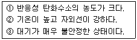
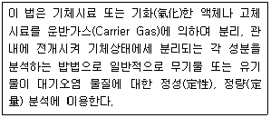
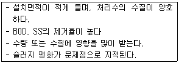
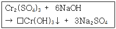
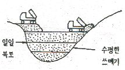
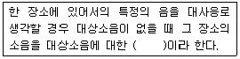

환경기능사 (2014-01-26 기출문제)
1과목: 대기오염방지
1. C8H18을 완전연소 시킬 때 부피 및 무게에 대한 이론 AFR로 옳은 것은?
- 부피 : 59.5 무게 : 15.1
- 부피 : 59.5 무게 : 13.1
- 부피 : 35.5 무게 : 15.1
- 부피 : 35.5 무게 : 13.1
(정답률: 61%)

2. 프로판(C3H8) 44을 완전연소 시키기 위해 부피비로 10%의 과잉공기를 사용하였다. 이때 공급한 공기의 양은?
- 112 Sm3
- 123 Sm3
- 587 Sm3
- 1.232 Sm3
(정답률: 45%)
3. 여름철 광화학스모그의 일반적인 발생조건으로만 옳게 묶여진 것은?

- ①, ②
- ①, ③
- ②, ③
- ③
(정답률: 70%)
4. 중력집진장치의 효율향상 조건에 관한 설명으로 옳지 않은 것은?
- 침강실내 처리가스 속도가 클수록 미립자가 포집된다.
- 침강실내 배기가스 기류는 균일하여야 한다.
- 침강실 입구폭이 클수록 유속이 느려지고, 미세한 입자가 포집된다.
- 다단일 경우 단수가 증가될수록 압력손실은 커지나 효율은 증가한다.
(정답률: 71%)
5. 원심력집진장치에서 한계(또는 분리)입경이란 무엇을 말하는가?
- 50% 처리효율로 제거되는 입자입경
- 100% 분리 포집되는 입자의 최소입경
- 블로우다운 효과에 적용되는 최소입경
- 분리계수가 적용되는 입자입경
(정답률: 66%)
6. 메탄(Methane) 1mol을 이론적으로 완전연소 시킬 때 0℃, 1기압 하에서 필요한 산소의 부피(L)는?(단, 이 때 산소는 이상기체로 간주한다.)
- 22.4 L
- 44.8 L
- 67.2 L
- 89.6 L
(정답률: 53%)
7. 배출가스 중의 염소농도가 200ppm이었다. 염소농도를 10mg/Sm3로 최종 배출한다고 하면 염소의 제거율은 얼마인가?
- 98.7%
- 97.2%
- 98.4%
- 99.6%
(정답률: 52%)
8. 대기의 상태가 과단열감율을 나타내는 것으로 매우 불안정하고 심한 와류로 굴뚝에서 배출되는 오염물질이 넓은 지역에 걸쳐 분산되지만 지표면에서는 국부적인 고농도 현상이 발생하기도 하는 연기의 형태는?
- 환상형(Looping)
- 원추형(Coning)
- 부채형(Fanning)
- 구속형(Trapping)
(정답률: 67%)
9. 다음 설명하는 장치분석법에 해당하는 것은?

- 흡광광도법
- 원자흡광광도법
- 가스크로마토그래프법
- 비분산적외선분석법
(정답률: 84%)
10. SO2 기체와 물이 30℃에서 평형상태에 있다. 기상에서의 SO2 분압이 44mmHg일 때 액상에서의 SO2 농도는?(단 30℃에서 SO2 기체의 물에 대한 헨리상수는 1.60×10 atm·m3/kmol 이다.)
- 2.51×10-4 kmol/m4
- 2.51×10-3 kmol/m3
- 3.62×10-4 kmol/m4
- 3.62×10-3 kmol/m3
(정답률: 48%)
11. 전기집진장치의 집진극이 갖추어야 할 조건으로 옳지 않은 것은?
- 부착된 먼지를 털어내기 쉬울 것
- 전기장 강도가 불균일하게 분포하도록 할 것
- 열, 부식성 가스에 강하고 기계적인 강도가 있을 것
- 부착된 먼지에 탈진시, 재비산이 잘 일어나지 않는 구조를 가질 것
(정답률: 76%)
12. 연소조절에 의한 NOx 발생의 억제 방법으로 옳지 않은 것은?
- 2단 연소를 실시한다.
- 과잉공기량을 삭감시켜 운전한다.
- 배기가스를 재순환시킨다.
- 부분적인 고온영역을 만들어 연소효율을 높인다.
(정답률: 69%)
13. 황(S) 성분이 1.6(wt%)인 중유가 2000kg/hr 연소하는 보일러 배출가스를 NaOH 용약으로 처리할 때 시간당 필요한 NaOH의 양(kg)은?(단, 황성분은 완전연소하여 SO2로 되며, 탈황률은 95%이다.)
- 76
- 82
- 84
- 89
(정답률: 34%)
14. 다음 중 오존 층의 두께를 표시하는 단위는?
- VAL
- OTL
- Pa
- Dobson
(정답률: 88%)
15. 질소산화물을 촉매환원법으로 처리하고자 할 때 사용되는 촉매는 무엇인가?
- K2SO4
- 백금
- V2O5
- HCI
(정답률: 66%)
2과목: 폐수처리
16. 다음 중 acidity 또는 hardness 는 무엇으로 환산하는가?
- 염화칼슘
- 질산칼슘
- 수산화칼슘
- 탄산칼슘
(정답률: 77%)
17. 4m×3m의 여과지에 1000m3/day의 유량을 처리하는 경우 여과율은?
- 0.96 L/m2·s
- 9.6 L/m2·s
- 0.12 L/m2·s
- 1.2 L/m2·s
(정답률: 37%)
18. 에탄올(C2H5OH)의 농도가 350mg/L인 폐수의 이론적인 화학적 산소요구량은?
- 620 mg/L
- 730 mg/L
- 840 mg/L
- 950 mg/L
(정답률: 54%)
19. 활성슬러지법으로 처리하고 있는 어떤 폐수처리시설포기조의 운영관리 자료 중 적절하지 않은 것은?
- SV가 20~30% 이다.
- DO가 7~9mg/L 이다.
- MLSS가 3000mg/L 이다.
- pH가 6~8 이다.
(정답률: 54%)
20. 시료의 5일 BOD가 212mg/L 이고, 탈산소계수값이 0.15/day(밀수 10)이면 이 시료의 최종 BOD(mg/L)는?
- 243
- 258
- 285
- 292
(정답률: 45%)
21. 아래 <보기>에 알맞은 생물학적 처리공정으로 가장 적합한 것은?

- 산화지법
- 살수여상법
- 회선원판법
- 활성슬러지법
(정답률: 74%)
22. 아연과 성질이 유사한 금속으로 체태 칼슘균형을 깨뜨려 골연화증의 원인이 되며, 이따이이따이병으로 잘 알려진 것은?
- Hg
- Cd
- PCB
- Cr+4
(정답률: 85%)
23. SVI=125 일 때 반송슬러지 농도(mg/L)는?
- 1000
- 2000
- 4000
- 8000
(정답률: 47%)
24. 아래 식은 크롬 함유 폐수의 수산화물 침전과정의 화학 반응식이다. 네모에 들어갈 알맞은 수치는?

- 1
- 2
- 3
- 4
(정답률: 74%)
25. 하수의 고도처리공법 중 인(P)성분만을 주로 제거하기위한 side stream 공정으로 다음 중 가장 적합한 것은?
- Dardenpho 공정
- Phostrip 공법
- A2/0 공정
- UCT 공정
(정답률: 65%)
26. 효과적인 응집을 위해 실시하는 약품교반 실험장치(jar tester)의 일반적인 실험 순서가 바르게 나열된 것은?
- 정지 침전 → 상징수 분석 → 응집제 주입 → 급속 교반 → 완속 교반
- 급속 교반 → 완속 교반 → 응집제 주입 → 정치 침전 → 상징수 분석
- 상징수 분석 → 정치 침전 → 완속 교반 → 급속 교반 → 응집제 주입
- 응집제 주입 → 급속 교반 → 완속 교반 → 정치 침전 → 상징수 분석
(정답률: 75%)
27. 다음 중 수처리시 사용되는 응집제와 거리가 먼 것은?
- PAC
- 소석회
- 입상활성탄
- 염화제2철
(정답률: 72%)
28. 부상법으로 처리해야 할 폐수의 성상으로 가장 적합한 것은?
- 수중에 용존유기물의 농도가 높은 경우
- 비중이 물보다 낮은 고형물이 많은 경우
- 수온이 높은 경우
- 독성물질을 많이 함유한 경우
(정답률: 67%)
29. MLSS 농도가 1000mg/L 이고, BOD 농도가 200mg/L인 2000m3/day의 폐수가 포기조로 유입될 때 BOD/MLSS부하는?(단, 포기조의 용적은 1000m3이다.)
- 0.1kg BOD/kg MLSS·day
- 0.2kg BOD/kg MLSS·day
- 0.3kg BOD/kg MLSS·day
- 0.4kg BOD/kg MLSS·day
(정답률: 46%)
30. 0.1N 염산(HCI) 용액의 예상되는 pH는 얼마인가?(단, 이 농도에서 염산 용액은 100% 해리한다.)
- 1
- 2
- 12
- 13
(정답률: 52%)
31. 다음 중 살수여상법으로 폐수를 처리할 때 유지관리상 주의할 점이 아닌 것은?
- 슬러지의 팽화
- 여상의 폐쇄
- 생물막의 탈락
- 파리의 발생
(정답률: 79%)
32. 166.6g의 C6H12O6가 완전한 혐기성 분해를 한다고 가정할 때 발생 가능한 CH4 가스용적으로 옳은 것은? (단, 표준상태 기준)
- 24.4L
- 62.2L
- 186.7L
- 1339.3L
(정답률: 42%)
33. 무기응집제인 알류미늄염의 장점으로 가장 거리가 먼 것은?
- 적정 pH폭이 2~12 정도로 매우 넓은 편이다.
- 독성이 거의 없어 대량으로 주입할 수 있다.
- 시설을 더럽히지 않는 편이다.
- 가격이 저렴한 편이다.
(정답률: 60%)
34. 스토크스(Stokes)의 법칙에 따라 물속에서 침전하는 원형 입자의 침전 속도에 관한 설명으로 옳지 않은 것은?
- 침전속도는 입자의 지름의 제곱에 비례한다.
- 침전속도는 물의 점도에 반비례한다.
- 침전속도는 중력가속도에 비례한다.
- 침전속도는 입자와 물간의 밀도차에 반비례한다.
(정답률: 60%)
35. 완속여과의 특징에 관한 설명으로 가장 거리가 먼 것은?
- 손실수두가 비교적 적다.
- 유지관리비가 적은 편이다.
- 시공비가 적고 부지가 좁다.
- 처리수의 수질이 양호한 편이다.
(정답률: 61%)
3과목: 폐기물처리
36. 쓰레기 발생량과 성상에 영향을 미치는 요인에 관한 설명으로 가장 거리가 먼 것은?
- 수집빈도가 높을수록, 그리고 쓰레기통이 클수록 발생량이 감소하는 경향이 있다.
- 일반적으로 도시의 규모가 커질수록 쓰레기 발생량이 증가한다.
- 쓰레기 관련 법규는 쓰레기 발생량에 매우 중요한 영향을 미친다.
- 대체로 생활수준이 증가하면 쓰레기 발생량도 증가하며 다양화된다.
(정답률: 82%)
37. 화상위에서 쓰레기를 태우는 방식으로 플라스틱처럼 열에 열화, 용해되는 물징의 소각과 슬러지, 입자상물질의 소각에고 적합하며, 체류시간이 길고 국부적으로 가열될 염려가 있으며, 연소효율이 나쁘며, 잔사의 용량이 많아질 수 있는 소각로는?
- 고정상
- 화격자
- 회전로
- 다단로
(정답률: 75%)
38. 폐기물 소각시설의 후연소실에 대한 설명으로 가장 거리가 먼 것은?
- 주연소실에서 생성된 휘발성 기체는 후연소실로 플러들어 연소된다.
- 깨끗하고 가연성인 액상 폐기물은 바로 후연소실로 주입될 수 있다.
- 후연소실 내의 온도는 주연소실의 온도보다 보통 낮게 유지한다.
- 연기내의 가연성분의 완전산화를 위해 후연소실은 충분한 양의 잉여 공기가 공급되어야 한다.
(정답률: 64%)
39. 퇴비화에 관련된 부식질(humus)의 특징과 거리가 먼 것은?
- 병원균이 사멸되어 거의 없다.
- 뛰어난 토양개량제이다.
- C/N비가 50~60 정도로 높다
- 물보유력과 양이온 교환능력이 좋다.
(정답률: 59%)
40. 소각로에서 적용하는 공기비(m)에 관한 설명으로 가장 적합한 것은?
- 실제공기량과 이론공기량의 비
- 연소가스량과 이론공기량의 비
- 연소가스량과 실제공기량의 비
- 실제공기량과 이론산소량의 비
(정답률: 68%)
41. 슬러지 내의 수분 중 일반적으로 가장 많은 영을 차지하며 고형물질과 직접 결합해 있지 않기 때문에 농축 등의 방법으로 용이하게 분리 할 수 있는 수분은?
- 간극수
- 모관결합수
- 부착수
- 내부수
(정답률: 76%)
42. 매립지에서의 침출수 발생량에 영향을 미치는 인자와 가장 거리가 먼 것은?
- 강우침투량
- 유출계수
- 증발산량
- 교통량
(정답률: 78%)
43. 폐기물의 해안매립공법 중 밑면이 뚫린 바지선 등으로 쓰레기를 떨어뜨려 줌으로써 바닥지반의 하중을 균일하게 하고, 쓰레기 지반 안정화 및 매립부지 조기이용 등에는 유리하지만 매립효율이 떨어지는 것은?
- 셀공법
- 박층뿌림공법
- 순차투입공법
- 내수배제공법
(정답률: 72%)
44. 폐기물처리에서 에너지 회수방법으로 거리가 먼 것은?
- 슬러지 개량
- 혐기성 소화
- 소각열 회수
- RDF 제조
(정답률: 58%)
45. 쓰레기를 파쇄처리하는 이유와 가장 거리가 먼 것은?
- 겉보기 밀도의 감소
- 입자크기의 균일화
- 부등침하의 가능한 억제
- 비표면적의 증가
(정답률: 61%)
46. 어느 도시에 인구 100,000명이 거주하고 있으며, 1인당 쓰레기 발생량이 평균 0.9(kg/인·일)이다. 이 쓰레기를 적재 용량이 5톤인 트럭을 이용하여 한 번에 수거를 마치려면 트럭이 몇 대 필요한가?
- 10대
- 12대
- 15대
- 18대
(정답률: 64%)
47. 일정기간동안 특정지역의 쓰레기 수차량의 대수를 조사하여 이 값에 쓰레기의 밀도를 곱하여 중량으로 환산하여 쓰레기 발생량을 산출하는 방법은?
- 경향법
- 직접계근법
- 물질수지법
- 적재차량 계수분석법
(정답률: 79%)
48. 매립가스 중 축적되면 폭발성의 위험성이 있으며, 가볍기 때문에 위로 확산되며, 구조물의 설계시에는 구조물로 스며들지 않도록 해야 하는 물질은?
- 메탄
- 산소
- 황화수소
- 이산화탄소
(정답률: 74%)
49. 다단로 소각에 대한 내용으로 틀린 것은?
- 체류시간이 길어 특히 휘발성이 적은 폐기물의 연소에 유리하다.
- 온도반응이 비교적 신속하여 보조연료 사용조절이 용이하다.
- 다량의 수분이 증발되므로 수분함량이 높은 폐기물의 연소도 가능하다.
- 물리·화학적 성분이 다른 각종 폐기물을 처리할 수 있다.
(정답률: 50%)
50. 그림과 같이 쓰레기를 수평으로 고르게 깔아 압축하고 복토를 깔아 쓰레기층과 복토층을 교대로 쌓는 매립공법을 무엇이라하는가?

- 박층뿌림공법
- 샌드위치공법
- 압축매립공법
- 도랑형공법
(정답률: 82%)
51. 폐시물의 원소를 분석한 결과 탄소 42%, 산소 40%, 수소 9%, 회분 7%, 황 2%이었다. 듀롱(Dulong)식을 이용하여 고위발열량(Kcal/kg)을 구하면?
- 약 4100
- 약 4300
- 약 4500
- 약 4800
(정답률: 42%)
52. 다음 중 MHT에 관한 설명으로 옳지 않은 것은?
- man·hour/ton을 뜻한다.
- 폐기물의 수거효율을 평가하는 단위로 쓰인다.
- MHT가 클수록 수거효율이 좋다.
- 수거작업간의 노동력을 비교하기 위한 것이다.
(정답률: 69%)
53. 다음 중 작용하는 힘에 따른 폐기물의 파쇄 장치의 분류로 가장 거리가 먼 것은?
- 전단식 파쇄기
- 충격식 파쇄기
- 압축식 파쇄기
- 공기식 파쇄기
(정답률: 74%)
54. 밀도가 1g/cm3인 폐기물 10kg에 고형화 재료 2kg/cm3을 첨가하여 고형화 시켰더니 밀도가 1.2g/cm3로 증가했다. 이 경우 부피변화율은?
- 0.7
- 0.8
- 0.9
- 1.0
(정답률: 48%)
55. 다음 중 폐기물의 기계적(물리적) 선별방법으로 가장 거리가 먼 것은?
- 체선별
- 공기선별
- 용제선별
- 관성선별
(정답률: 47%)
4과목: 소음 진동학
56. 음의 회절에 관한 설명으로 옳지 않은 것은?
- 회절하는 정도는 파장에 반비례한다.
- 슬릿의 혹이 좁을수록 회절하는 정도가 크다.
- 장애물 뒤쪽으로 음이 전파되는 현상이다.
- 장애물이 작을수록 회절이 잘된다
(정답률: 49%)
57. 다음 ( )안에 알맞은 것은?

- 고정소음
- 기저소음
- 정상소음
- 배경소음
(정답률: 80%)
58. 가속도진폭의 최대값이 0.01m/s2인 정현진동의 진동 가속도 레벨은?(단, 기준 10-5 m/s2)(오류 신고가 접수된 문제입니다. 반드시 정답과 해설을 확인하시기 바랍니다.)
- 28 dB
- 30 dB
- 57 dB
- 60 dB
(정답률: 42%)
59. 공해진동에 관한 설명으로 옳지 않은 것은?
- 진동수 범위는 1,000~4,000㎐ 정도이다.
- 문제가 되는 진동레젤은 60dB 부터 80dB 까지가 많다.
- 사람이 느끼는 최소진동역치는 55±5 dB 정도이다.
- 사람에게 불쾌감을 준다.
(정답률: 56%)
60. 무지향성 점음원을 두 면이 접하는 구석에 위치시켰을 때의 지향지수는?
- 0
- +3dB
- +6dB
- +9dB
(정답률: 64%)
부피로 계산할 경우, C8H18 1 mol에 대해 12.5 mol의 공기가 필요하므로, 이론 AFR은 12.5 : 1 = 12.5이다. 부피는 공기의 밀도가 1.2 g/L이므로, 1 mol의 공기는 24.45 L이 된다. 따라서, C8H18 1 mol에 대해 필요한 공기의 부피는 24.45 x 12.5 = 3⑤.63 L이 된다.
무게로 계산할 경우, C8H18 1 kg에 대해 15.5 kg의 공기가 필요하므로, 이론 AFR은 15.5 : 1 = 15.5이다.
따라서, 이론 AFR이 부피로 계산한 경우는 12.5이고, 이에 따른 공기의 부피는 3⑤.63 L이 된다. 이론 AFR이 무게로 계산한 경우는 15.5이다. 이론 AFR이 부피로 계산한 경우에 비해 공기의 부피가 더 적게 필요하므로, 무게로 계산한 경우에는 공기의 부피가 더 작아진다. 따라서, 이론 AFR이 부피로 계산한 경우보다 무게로 계산한 경우에는 더 적은 부피가 필요하다. 따라서, 정답은 "부피 : 59.5 무게 : 15.1"이다.